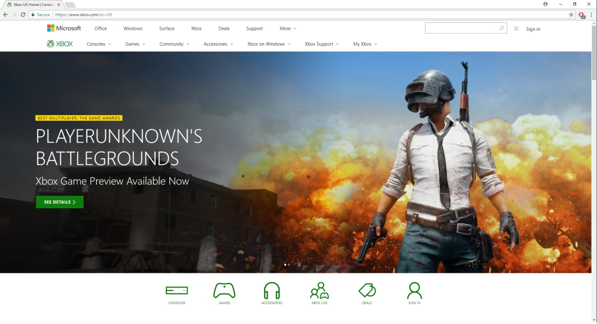
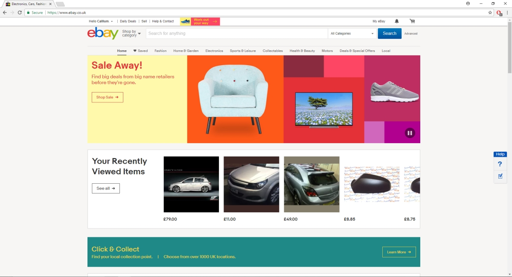
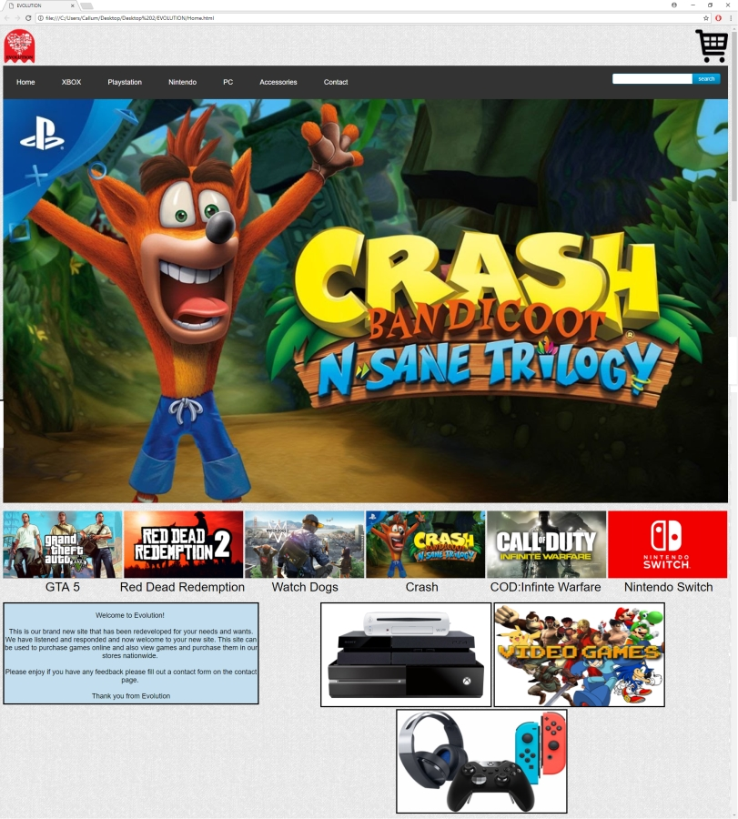

The thought behind the design and process
After learning HTML and CSS at College I decided to invest out of school times therefore I spent time designing
my own websites, I learnt the colour scheme that I liked the most and so every website project I have made has included
them. I always liked when website have big clear images that take up alot of the page this is so people viewing are able to see the image clearly.
The issue with doing this is the image file size can be very big due to the quality although this can be compressed down.
I used some ideas from sites shown below that I visit regularly these web pages shared my idea with the big images and big full screen slideshows.
I focused on methods of good practises and therefore I focused on what would make the useres experience easier. Therefore I made sure that the navigation bar
works and is fully functional and simple to use. This website will be viewed on more tha just a computer and probably a mobile device as many people now view web pages
on their phones and tablets. I encorporated this in my decision as everything on the page is set to certain proportion and will change when the web window is re-sized.
By doing this it will look good on the users device and it won't matter what device they decide to use as it will resize.

I chose to use this website because it has big clear slideshows and big interactive buttons it's bright
it follows a colour scheme thorugh out the whole page. It looks clean and inviting, the images on the page are
fit to the edge of the page but as they stretch with the resizeable window they are still clear the entire time.

I was looking at the website ebay recently and I liked the home pages huge page length slideshow and so I wanted
to include it on the website. This can be found on Page 6 - Reflection. I also looked
at the designs of the page but I decided not to use it due to me personally feeling that the page looked a little
clustered and all over the place although the adverts didn't help.
Evolution - My College Project

I finally decided to follow the design of my previous website that I had created. I used the same colour scheme
as I felt that it was well recieved and in my opinion it looked good and this was what I wanted to accomplish.